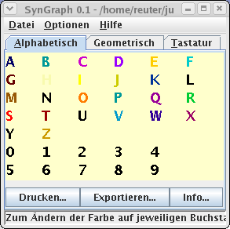
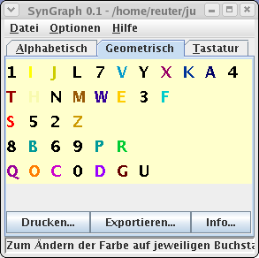

Diese Einführung gibt es auch als deutsche Version.
SynGraph
SynGraph is a software tool for capturing
and visualizing data on object-color mappings in the field of
graphemic synaesthesia. object-color mappings can be
interactively entered into the software through its graphical
user interface; the resulting diagrams can be viewed on screen,
printed to paper as well as permanently stored on disk.
Basic Properties of the Software
As of its current version 0.2, the software supports the
following basic functionality:
-
Data Capturing
-
Capturing object-color mappings can be interactively performed
on screen with mouse and keyboard input by choosing an
individual color for each object in a diagram. Objects are
represented by character strings, including single letters and
digits. Captured data is stored in a simple, XML based file.
This file and any other associated resources are compressed
and saved in an archive, following the .zip file format.
Having collected graphemic data from multiple people, the
simple file format makes it easy to further process the data
for analytical studies. For example, external additional
tools could be applied in order to automatically compute a
statistic evaluation of the object-color mappings of a larger
number of probationers, in order to reveal similarities and
differences in their individual mappings. A typical result
could be the finding that people who perceive the letter
A in red color, tend to perceive the letter
I in yellow or white color.
-
Comparing Representation of Selected Criteria of Order
-
The program also enables the user to graphically verify
hypothetical inclinations of mappings. To achieve this goal,
the program groups objects in tabbed panes, placed according
to specific similarity criteria (cp. Fig. 1), for example by
ordering capital letters and digits by their geometrical form,
assuming a classical sans serif font for the notion of
geometrical form of characters. Further criteria for ordering
are imaginable, such as phonetic similarity of words or
letters, similarity of muscles activated upon speaking
(anatomic similarity), sorting of letters according to the
order pupils learn them in school, or sorting of letters
according to their frequency in natural language. The tabbed
panes enable the user to directly visually compare and value
such orderings and their correspondence to their individual
object-color mappings. Moreover, by comparing the diagrams in
the tabbed pane, the probationer can immediately recognize how
far pure reordering of characters influences the colored
perception of objects.
|

|

|
|
Fig. 1: Object-Color Mappings based on Various
Criteria of Ordering
|
-
Personally Colored Note Pad
-
The coloured notepad displays arbitrary texts according to the
object-color mapping of characters. The text can be manually
entered or cut-&-pasted into the pad, displayed, printed,
or saved as image. This way, the characteristics of an
individual person's graphemic synaesthesia can be nicely
illustrated as well as used for validation of the user's
specification of character-color mapping.

|
|
Fig. 2: Colored Note Pad
|
-
Miscelleanous Properties
-
The software also supports selecting the font and character
size to be used for display, as well as the background color
(cp. Fig. 3). Committing a change of such a property in one
window immediately affects display in all other simultaneously
opened windows.

|
|
Fig. 3: Miscelleanous Properties
|
Current Limitations
Currently, the software supports only few forms of synaesthesia
reaching beyond pure character-color mappings. Mappings from
character strings to colors are partially supported. The set of
missing features most notably contains multi-colored or textured
objects; consideration of contextual influence of neighbouring
colored objects (e.g. colored letters within a word); and
objects beyond characters and strings. The supported set of
colors currently is based on the standard RGB color model;
transparent or metallic colors are not supported by now.
Advanced Description
A more detailed description of the software is currently not
available. Still, most of the features built into the software
should be self-explanatory. In case, somebody writes a more
comprehensive documentation in an appropriate style, I will
gladfully insert the documentation in this place.
Download
SynGraph has been completely developed in Java and is
distributed under version 2 of the GNU Public License
(“GPL”). A binary version of the code is available
as JAR archive file and should run out of the box on any
platform that has installed Java Version 5 (JDK 1.5) or higher.
For more on information on Java, see
http://java.sun.com. The latest version of
SynGraph can be downloaded as source code as well as in binary
form from the Web at http://www.soundpaint.org/syngraph/syngraph.php.
Further Reading
The following references on synaesthesia may be interesting for
the reader:
http://www.synaesthesie.net/ |
Internet forum for synaesthetics and synaesthetic
researchers |
http://www.synaesthesieforum.de/ |
Moderated mailing list for synaesthetics and
synaesthetic researchers |
http://www.synaesthesie.ch/ |
Swiss internet forum with synaesthetic test |
http://www.sensequence.de/ |
sensequence — a collection of mostly pictured
descriptions of individual synaesthetic sensations
|